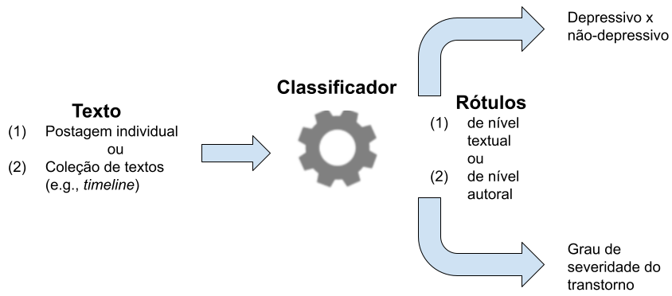
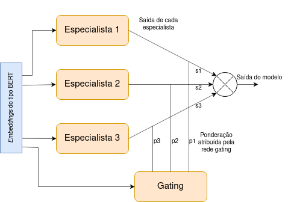
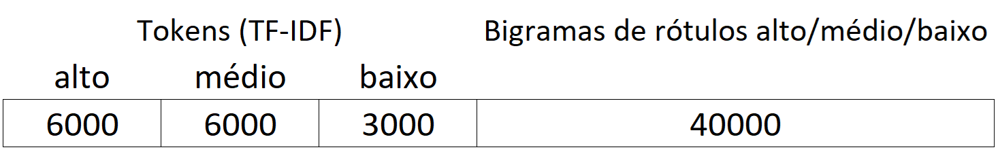

10 Detecção de Transtornos de Saúde Mental a partir de Texto
10.1 Introdução
Transtornos de saúde mental como depressão e ansiedade são problemas bem conhecidos e uma crescente fonte de preocupação na sociedade moderna. Segundo dados do Global Burden of Disease Study de 20191, a depressão é o segundo fator que mais impacta na queda da expectativa de vida da população global. Aliado à gravidade do quadro, a Organização Mundial da Saúde (OMS) alerta que apenas um quarto dos indivíduos que sofrem algum transtorno de saúde mental recebem o atendimento adequado (WHO, 2021). No caso específico do Brasil, de acordo com Lopes et al. (2022), a prevalência da depressão no país cresceu 36,7% de 2013 a 2019, indo de 7,9% em 2013 para 10,8% em 2019. Durante a pandemia de Covid-19, outra pesquisa (Zhang et al., 2021) realizada em maio de 2020 com 483 adultos constatou que 70,3% tinha sintomas de depressão e 67,2% tinham sintomas de ansiedade.
Ao mesmo tempo, diversos estudos demonstram que indivíduos com transtornos de saúde mental são usuários regulares de redes sociais em proporção similar à população em geral, que é estimada em cerca de 70% entre indivíduos de meia idade e até 97% entre indivíduos mais jovens (Aschbrenner, 2020; Aschbrenner et al., 2018; Birnbaum et al., 2017; Brunette et al., 2019), e que indivíduos com estes transtornos frequentemente recorrem às redes sociais em busca do suporte de outros usuários com problemas semelhantes (Bucci et al., 2019).
Este cenário, e a observação de que transtornos de saúde mental frequentemente se refletem na linguagem empregada pelos indivíduos que sofrem dessas condições, levaram a um número expressivo de estudos no PLN e áreas relacionadas, tendo como foco a detecção de transtornos como depressão, ansiedade, bipolaridade, anorexia, ideação suicida e automutilação em redes sociais (Cohan et al., 2018; Lin et al., 2020; Mann et al., 2020; Shen et al., 2017; Shen; Rudzicz, 2017; Trotzek et al., 2018; Yates et al., 2017; Yazdavar et al., 2017). Este capítulo visa apresentar um levantamento geral de estudos deste tipo, que procuram identificar casos de maior gravidade e eventualmente sinalizar a necessidade de um indivíduo buscar ajuda por meio da detecção computacional de transtornos de depressão e ansiedade a partir de textos em português, em geral provenientes de redes sociais.
10.1.1 Definição do problema
A detecção computacional de indivíduos com transtornos de saúde mental a partir de textos provenientes de redes sociais e outras fontes é uma tarefa complexa e não totalmente resolvida na pesquisa em PLN, sendo tipicamente modelada como um problema de aprendizado de máquina (AM) supervisionado. Em abordagens deste tipo, um corpus de publicações (e.g., puramente textuais ou multimodais) rotulado com algum tipo de informação relativa à saúde mental (e.g., depressivo ou não depressivo) é utilizado para treinamento e teste de modelos de classificação do fenômeno de interesse.
Com base em um corpus textual rotulado com informações de saúde mental, há diversas formulações possíveis para o problema computacional a ser resolvido. Dentre estas, as mais comuns são a detecção de transtornos de saúde mental (e.g., decidir se um indivíduo é depressivo ou não, como em (Yates et al., 2017)), e a detecção de sintomas (e.g., decidir se um texto expressa um sintoma tradicional de depressão, como em (Yadav et al., 2020)). Outras formulações menos frequentes para o problema incluem o objetivo de determinar o grau de severidade de um determinado transtorno (Mann et al., 2020), ou diferenciar o discurso de indivíduos depressivos de outros meramente interessados em saúde mental (Santos et al., 2020), ou identificar uma granularidade maior de sintomas e fatores protetivos e de risco para a depressão (Mendes; Caseli, 2024). Há, ainda, outra formulação popularizada pela série de desafios computacionais eRisk (Losada; Crestani, 2016) que é a tarefa de detecção precoce de risco de depressão e outros transtornos, em que o objetivo consiste em prever o estado de saúde mental de um indivíduo com base no menor volume possível de publicações em ordem cronológica, ou seja, o mais cedo possível.
Outro aspecto importante da formulação do problema é o objeto da classificação. Parte dos estudos da área é dedicada à classificação de estados de saúde mental de indivíduos (e.g., usuários de rede social). Este tipo de abordagem, aqui denominada de nível autoral, toma por base uma coleção de publicações de um indivíduo (e.g., uma sequência de postagens em rede social, ou timeline) que pode ou não conter informações relevantes para a tarefa. Abordagens orientadas ao indivíduo são empregadas quando o objetivo é estabelecer o estado de saúde mental (e.g., depressivo versus não depressivo) de uma pessoa. Por outro lado, abordagens aqui denominadas de nível textual modelam o problema de classificação de textos individuais (e.g., postagens de rede social) independentemente da sua autoria. Estas abordagens tendem a ser mais utilizadas quando o objetivo é filtrar ou selecionar textos de maior relevância para uma aplicação da área de saúde mental, como a detecção de sintomas de depressão em redes sociais. A Figura 10.1 ilustra estas possibilidades considerando o exemplo da detecção de depressão, e estas abordagens são discutidas em mais detalhes nas seções a seguir.

10.1.1.1 Classificação de nível autoral
A classificação de nível autoral recebe como entrada uma coleção de textos e outros dados produzidos por (ou relativos a) uma determinada pessoa (e.g., uma coleção de postagens em redes sociais, meta-dados etc.), e objetiva determinar o estado de saúde mental (e.g., depressivo ou não depressivo) desta pessoa. A base de dados de treino e teste nestes casos contempla indivíduos com um transtorno de saúde mental conhecido (ou pertencentes à classe positiva, na terminologia de AM), que podem ser selecionados por meio de validação externa (e.g., por meio de avaliação médica especializada ou uso de questionários, como em (Mann et al., 2020)), obtendo-se, por exemplo, um corpus de textos de indivíduo com e sem depressão. Este método de aquisição de dados, apesar de confiável, tende a ser de alto custo, o que na prática pode limitar o número de casos (ou instâncias) obtidos.
Como alternativa à validação externa, estudos da área de PLN têm explorado a ocorrência de autorrelatos em redes sociais, como em “Fui ao psicólogo hoje e ele me diagnosticou com esquizofrenia” para identificar rapidamente grandes volumes de indivíduos da classe positiva com custo mínimo. Autorrelatos deste tipo – que servem apenas para a seleção de usuários, mas que não são incluídos nos dados do corpus propriamente dito – são comuns em redes sociais, e embora sejam naturalmente mais sujeitos a imprecisões ou falsidade (o que de resto pode ser problemático também no caso da validação externa), é geralmente aceito que estas dificuldades tendem a ser compensadas pelo maior volume de dados obtido por este método (Coppersmith et al., 2015).
Dado entretanto que autorrelatos fornecem evidência apenas da possível presença de um transtorno, mas não da sua ausência – e que portanto não podem ser tomados por base para seleção de indivíduos que deveriam compor a classe negativa do aprendizado – faz-se necessário utilizar neste caso uma formulação distinta para o problema. Mais especificamente, ao invés de utilizar um conjunto de usuários (por exemplo) sem depressão, utiliza-se um grupo de usuários de controle selecionados aleatoriamente (e que portanto também inclui um certo número de indivíduos com depressão não detectáveis) de proporção várias vezes superior ao da classe positiva (normalmente proporcional à incidência do transtorno na população em geral). Assim, o problema computacional a ser resolvido não consiste em distinguir indivíduos com e sem depressão (e na verdade a informação sobre ausência de depressão é inexistente nos dados), e sim em identificar indivíduos com probabilidade acima da média da população geral de virem a receber um futuro diagnóstico. Esta probabilidade, que entre indivíduos da classe positiva será próxima de 100%, é necessariamente muito mais baixa em um grupo de controle aleatório, e pode assim ser capturada com métodos computacionais variados como o aprendizado profundo.
Em virtude destas características, o uso de autorrelatos para identificar indivíduos (provavelmente) diagnosticados com um transtorno de saúde mental configura um problema de AM fortemente desbalanceado. Mesmo com estas dificuldades, entretanto, a seleção de indivíduos com transtorno de saúde mental por meio de seus próprios autorrelatos é possivelmente o método de coleta de dados mais popular na pesquisa na área de PLN (Cohan et al., 2018; Losada et al., 2019; Santos et al., 2024; Yates et al., 2017).
10.1.1.2 Classificação em nível textual
A classificação de nível textual recebe como entrada um texto individual (e.g., uma postagem em rede social) e objetiva verificar se este texto expressa algum tipo de informação relacionada à saúde mental (e.g., se é de caráter depressivo ou não) sem levar em conta a identidade do seu autor. Modelos deste tipo são comumente empregados para detectar sintomas de depressão (Yadav et al., 2020), verificar a pertinência do texto para detecção de um transtorno (Santos; Paraboni, 2024), entre outras aplicações. A classificação em nível textual pode também ser tratada como um pré-requisito para a classificação de nível autoral, procurando filtrar textos de maior interesse para a tarefa em meio a uma grande massa de dados ruidosos (e.g., provenientes de redes sociais). Uma estratégia possível de combinação destes dois níveis de processamento é, por exemplo, o uso de aprendizado baseado em múltiplas instâncias (Mann et al., 2022).
Ao contrário da classificação em nível autoral, em que atribui-se um rótulo a uma coleção de textos (e.g., uma timeline de rede social) com base em um relato feito pelo próprio autor (ou usuário), a classificação em nível textual pressupõe a disponibilidade de textos rotulados individualmente com o tipo de informação a ser aprendida. Isso demanda um esforço adicional de anotação de corpus, ou algum método de rotulação automática implementado com uso de grandes modelos de linguagem (-cap-modelos-linguagem) e engenharia de prompts (Santos; Paraboni, 2023; Santos; Paraboni, 2024).
Um exemplo de projeto que trabalhou na classificação em nível textual foi o Amive2 (Seção Amive: detecção de sintomas de depressão em português). Nesse projeto, postagens anônimas de páginas de segredos universitários foram coletadas por meio da busca por palavras-chave associadas à depressão e ideação suicida. Essas postagens foram, então, rotuladas com 21 sinais relacionados a depressão (sintomas, fatores de risco e protetivos) por estudantes e profissionais das áreas de psicologia, medicina e terapia ocupacional. Contudo, a anotação em uma granularidade maior, em dados de conteúdo sensível, por especialistas humanos é um trabalho bastante oneroso que demanda tempo e deve ser feito com cuidado para não afetar também a saúde mental dos anotadores.
10.2 Conjuntos de dados para detecção de depressão/ansiedade
A detecção de depressão e ansiedade a partir de textos faz o uso de corpus especialmente coletados e rotulados para este propósito. Recursos linguístico-computacionais deste tipo já foram desenvolvidos em quantidade expressiva para o idioma inglês, em alguns casos como subproduto de eventos do tipo shared task como o desafio CLPsych-2015 (Coppersmith et al., 2015) e a série eRisk (Losada et al., 2019). Iniciativas para o português incluem o estudo em (Mann et al., 2020) e o corpus SetembroBR (Santos et al., 2024). Nesta seção apresentamos um levantamento de alguns recursos linguísticos-computacionais existentes na área. Para cada um dos estudos selecionados, a Tabela 10.1 apresenta o domínio, idioma e modalidade de dados, o número de instâncias de depressão/ansiedade, a relação entre usuários de controle (C) e diagnosticados (D) e o método de pareamento das classes. Detalhes adicionais são discutidos a seguir.
| Corpus | Domínio | Idioma | Modalidade | Dep. | Ans. | C/D | Pareamento |
|---|---|---|---|---|---|---|---|
| CLPsych-2015 | Twitter/X | En | texto | 477 | - | 1 | idade, gênero |
| RSDD | En | texto | 9210 | - | 11,6 | comportamento | |
| Shen et al. | Twitter/X | En | texto | 1402 | - | 1 | na |
| eRisk-2017 | En | texto | 135 | - | 5,6 | na | |
| eRisk-2018 | En | texto | 214 | - | 7 | na | |
| SMHD | En | texto | 14139 | 8783 | 9 | comportamento | |
| Mann et al. | Pt | texto, imagens | 82 | - | 1,7 | na | |
| SetembroBR | Twitter/X | Pt | texto, rede soc. | 1283 | 1767 | 7 | gênero, data, tamanho |
| Amive | Pt | texto | 780 | - | - | na |
Com base neste levantamento, observa-se que os corpora existentes tendem a ser baseados principalmente nos domínios Reddit e Twitter/X, e que a maioria dos recursos listados são do tipo textual e dedicados ao idioma inglês. Para o português temos o já citado estudo em (Mann et al., 2020), que se destaca por ser o único a considerar o domínio Instagram e baseado no idioma português, e também por incluir dados de imagens; o corpus SetembroBR (Santos et al., 2024) a ser discutido em mais detalhes na Seção SetembroBR: detecção de depressão/ansiedade em português e único do gênero a incluir informações relativas à rede social dos usuários representados na base de dados; e o corpus do projeto Amive, apresentado em detalhes na Seção Amive: detecção de sintomas de depressão em português. Além disso, observa-se que os corpora SetembroBR e SMHD são os únicos que contemplam explicitamente casos de transtorno de ansiedade3. É importante observar, entretanto, que diversos métodos de detecção de transtornos de saúde mental discutidos na próxima seção fazem uso de dados multimodais (e.g., imagens e características da rede social etc.) mas que este tipo de informação, via de regra, não é parte integrante de um corpus publicamente disponibilizado para pesquisa.
No que diz respeito ao volume de dados, observa-se que os corpora considerados apresentam grande variação de tamanho (aqui medida em quantidade de indivíduos diagnosticados), e que recursos baseados em dados da rede social Reddit tendem a ser maiores. Isso é explicável pela organização dos dados em grupos de discussão (e.g., sobre depressão) nessa plataforma e, consequentemente, pela maior facilidade de identificação de indivíduos diagnosticados. Dados no domínio Twitter/X, por outro lado, são consideravelmente menos estruturados, o que torna mais complexa a tarefa de seleção de indivíduos com transtorno de saúde mental. No caso do corpus do projeto Amive, a quantidade apresentada na tabela indica o total de posts do Facebook coletados para serem anotados pelos especialistas em saúde mental a partir de busca por palavras-chave relacionadas à depressão e ideação suicida. Neste sentido, esse corpus difere dos demais uma vez que as instâncias não se referem a indivíduos diagnosticados, mas sim a postagens que podem ter sinais relacionados à depressão. Pela mesma especificidade desse corpus, não faz sentido indicar a proporção C/D nesse caso.
Observa-se de modo geral uma grande variação também na proporção entre indivíduos de controle e diagnosticados, indicada na coluna C/D da tabela, e que é um aspecto crucial da modelagem do problema de classificação a ser resolvido. Dentre os estudos selecionados, o corpus CLPsych-2015 é o único, dentre os mais amplamente utilizados na área, que se limita a um balanceamento artificialmente ideal, criado com o objetivo de simplificar o uso de métodos de AM no contexto da competição (ou shared task) de mesmo nome, enquanto que em todos os demais procurou-se considerar de alguma forma a necessidade de modelar um cenário mais realista. Dentre as estratégias adotadas, observa-se a modelagem de um grupo de controle de dimensão bastante superior ao do grupo de diagnosticados (Cohan et al., 2018; Losada et al., 2017, 2018; Santos et al., 2024; Yates et al., 2017), o uso de múltiplas seleções de indivíduos aleatórios a partir de uma grande massa de dados (Shen et al., 2017), ou simplesmente o uso de inventários clínicos (Mann et al., 2020) como forma de selecionar indivíduos livres de depressão (a um custo possivelmente elevado, refletido no menor volume de indivíduos obtidos, porém dispensando o uso de um grupo de controle aleatorizado).
Outra questão fundamental na construção de um corpus deste tipo é o pareamento entre indivíduos diagnosticados e suas contrapartidas no grupo de controle, já que diferenças indesejáveis entre os dois conjuntos podem levar ao aprendizado de padrões espúrios. Por exemplo, caso indivíduos diagnosticados e de controle sejam extraídos de populações diferentes (e.g., com publicações feitas em períodos muito distintos), é possível que diferenças de vocabulário, decorrentes da evolução natural da língua, sejam tratadas como características relevantes para distinção entre as duas classes. Assim, como forma de assegurar que os dois grupos sejam minimamente comparáveis, o corpus CLPsych-2015 se destaca como o único a garantir pareamento de gênero e faixa etária entre indivíduos de ambas as classes, o que minimiza possíveis diferenças de vocabulário entre os dois grupos. O pareamento entre classes também é uma preocupação do corpus RSDD e sua extensão SMHD, em que indivíduos diagnosticados e de controle são selecionados com base no seu comportamento na rede social (e.g., grupos de discussão dos quais participam, frequência de postagens etc.). Este tipo de pareamento é um quesito importante no caso da plataforma Reddit, mas não possui contrapartida direta no domínio Twitter/X. No corpus SetembroBR, baseado na plataforma Twitter/X, foi realizado o pareamento por datas aproximadas de publicação, volume de postagens e gênero dos usuários. No caso do corpus do projeto Amive, uma vez que as postagens são anônimas, o pareamento com base em informações como gênero e idade não seria possível. Nesse caso, como o foco era o público alvo de estudantes universitários, buscou-se minimizar o impacto de algum viés variando-se as páginas de Segredos Universitários a partir das quais as postagens foram coletadas.
Com exceção do corpus SetembroBR a ser discutido em mais detalhes na Seção SetembroBR: detecção de depressão/ansiedade em português, os recursos aqui discutidos não levam em conta a noção de detecção precoce de transtornos, ou seja, anterior ao momento em que o indivíduo é oficialmente diagnosticado por um profissional da área de saúde. Em todos os casos discutidos, os dados constantes do corpus contemplam publicações feitas antes e depois do diagnóstico ou tratamento do indivíduo, e podem assim incluir um número potencialmente grande de indicadores a esse respeito. Por exemplo, uma vez que um indivíduo é diagnosticado ou começa a fazer tratamento para depressão, pode ser natural que ele passe a falar (ou falar mais) sobre este assunto, ou que relate as conversas que tem com o psicólogo, os efeitos da medicação etc. Todos estes indicadores, que em maior ou menor grau estão presentes em todos os corpora aqui discutidos, podem não só reduzir o grau de realismo do desafio computacional, como talvez reduzir a própria utilidade prática do método desenvolvido. Além disso, cabe observar que esta limitação está presente até mesmo nos corpora disponibilizados na série de desafios e-Risk (Losada et al., 2017, 2018, 2019), que mesmo possuindo o propósito explícito de detecção de primeiros sinais de transtornos de saúde mental como depressão, não fazem nenhuma distinção efetiva entre dados publicados antes ou depois do seu diagnóstico oficial, limitando-se apenas ao desafio computacional de classificar estes indivíduos com base no menor volume de dados possível seguindo a ordem cronológica das publicações.
Finalmente, é importante destacar que corpora textuais rotulados com informações sobre saúde mental geralmente não são recursos computacionais totalmente acessíveis, como seriam corpora voltados a outros tipos de aplicação de PLN. Além da natureza sensível do problema e das considerações éticas associadas, algumas redes sociais como a plataforma Twitter/X proíbem a reprodução e divulgação de conteúdo gerado por seus usuários como forma de proteger a privacidade e o direito de arrependimento destes. Assim, corpora de tweets como SetembroBR, quando disponibilizados, são apenas coleções de identificadores numéricos a partir dos quais as postagens integrais podem ser recuperadas diretamente a partir da API da plataforma, caso ainda sejam disponibilizadas pelos seus autores. Este acesso, via de regra, acarreta algum esforço de programação e, no caso da plataforma Twitter/X, deixou de ser gratuito em fevereiro de 2023.
10.3 Modelos computacionais de detecção de depressão/ansiedade
A detecção de transtornos de saúde mental apresenta os desafios comuns à boa parte das aplicações de PLN. Em especial, observa-se que a distinção entre indivíduos diagnosticados e aqueles que pertencem ao grupo de controle com base em características linguísticas é naturalmente dificultada pelo fato de que ambos os grupos podem discutir qualquer tipo de assunto, incluindo questões relacionadas à saúde mental (deles próprios, de terceiros etc.), em uma variedade de contextos reais e imaginários, fazendo uso de humor, sarcasmo, metáforas, conjecturas e muitas outras formas de expressão. Além disso, no caso do aprendizado a partir de textos provenientes de redes sociais, observa-se que os dados de entrada são normalmente esparsos, isso é, com grande incidência de ruído na forma de postagens sem relação com o problema a ser tratado. É comum, por exemplo, deparar-se com timelines de usuários do Twitter/X que, apesar de sabidamente diagnosticados com depressão, não fazem qualquer referência a questões de saúde mental.
O que possui um texto para que seja classificado como relacionado a um determinado transtorno de saúde mental? De um lado, são conhecidos diversos indicadores linguísticos estabelecidos na literatura médica (Trifu et al., 2017). Indicadores deste tipo incluem o uso frequente de pronomes de primeira pessoa, tempo passado em verbos de ação, inversão da ordem de palavras em tópicos, ênfases, presença de sentenças curtas, impessoais, truncadas ou ríspidas, elipses, tautologias, repetições e ausência de comparação. O uso de termos absolutistas (e.g., todo, sempre etc.) também é mais fortemente associado a indivíduos com depressão (Johnstone, 2018), assim como o uso de expressões de conotação negativa em certas redes sociais (Rickard, 2018). Finalmente, alguns estudos exploram também o uso de informações não textuais como conexões da rede social, frequência e horário de publicações e outros (Choudhury et al., 2013; Shrestha; Spezzano, 2019).
Indicadores linguísticos de transtornos de saúde mental são normalmente modelados como sequências de tokens ou outras representações textuais tradicionais do PLN. Embora de valor indiscutível (por exemplo, para capturar o uso de referências pronominais etc.), a eficácia destes indicadores depende em grande parte da disponibilidade de um conjunto de treino suficientemente grande, onde todos os exemplos possíveis tenham ocorrido em número significativo para aprendizado automático. Assim, por exemplo, um modelo de AM reconhece a correlação entre sequências de tokens como “eu me sinto péssimo”, ou “psicóloga disse que eu tenho que me cuidar melhor” e saúde mental. Por outro lado, exemplos mais raros, mesmo que altamente significativos, tendem a ser ignorados. Este é o caso por exemplo do uso de linguagem figurativa como em “acho que vou pular da ponte” como uma expressão de ideação suicida.
Uma possível forma de compensar a insuficiência de exemplos (que é em certa medida inerente a qualquer abordagem supervisionada) seria o uso de grandes modelos de linguagem como base de conhecimento auxiliar. Neste sentido, estudos como (Santos; Paraboni, 2024) demonstram que modelos como GPT (Brown et al., 2020) podem capturar com facilidade noções complexas como a do exemplo anterior, e que este conhecimento pode ser combinado com abordagens tradicionais (e.g., supervisionadas) para detecção de transtornos de saúde mental em dois níveis, ou seja, considerando tanto indicadores linguísticos de baixo nível como sequências de tokens e conceitos de alto nível como sintomas. Detalhes desta estratégia são discutidos na Seção SetembroBR: detecção de depressão/ansiedade em português.
O Quadro 10.1 categoriza uma série de exemplos de estudos da área de acordo com o tipo de problema considerado (d=depressão, a=ansiedade, s=sintomas de depressão, v=grau de severidade da depressão, *=outros), tarefa (det=detecção, e.d = detecção precoce, exp=explicação), domínio (Reddit, Twitter/X etc.), idioma (En=inglês, Ch=chinês, Pt=português), características de aprendizado (e=embeddings, t=tópicos, n=informações de rede, u=informações referentes ao usuário, l=atributos psicolinguísticos LIWC, p=part-of-speech, d=dicionário de domínio, s=sentimentos/emoções, i=imagens, b=bag of words, m=metadados, t=informação temporal, ou texto simples), e métodos de aprendizado (e.g., CNN=redes neurais convolucionais, LSTM=long short-term neural networks, MLP=multilayer perceptron, NN=outras arquiteturas neurais, LR = regressão logística, RF=Random Forest, DT=árvore de decisão, NB=Naive Bayes, XG=XGBoost etc.). Detalhes adicionais são discutidos a seguir.
No que diz respeito ao tipo de transtorno a ser detectado, observa-se que estudos focados na depressão (d) tendem a ser muito mais frequentes do que os focados no transtorno de ansiedade (a). Além disso, observa-se que o estudo de (Arora, 2019) trata da questão da ansiedade depressiva, um transtorno misto que combina sintomas de depressão e ansiedade, e que o trabalho de (Souza et al., 2020b) investiga a comorbidade destes dois transtornos. Alguns estudos enfocam ainda a detecção de sintomas (Mendes; Caseli, 2024; Yazdavar et al., 2017) ou grau de severidade (Mann et al., 2020) destes transtornos.
Considerando-se a tarefa computacional a ser implementada, é possível observar que a maioria dos estudos identificados trata da detecção (det) de depressão/ansiedade ou sua detecção com base no menor volume possível de evidência (e.d), que é uma formulação específica do problema adotada na série de shared tasks eRisk (Losada et al., 2019), e/ou baseada nos corpora derivados destas competições. A preocupação com a necessidade de explicar os passos que levaram ao resultado da classificação é o foco do estudo de (Song et al., 2018).
Assim como no caso dos corpora discutidos na seção anterior, os estudos identificados são, com poucas exceções, baseados em dados nos domínios Twitter/X ou Reddit. Vários destes estudos desenvolvem seus próprios conjuntos de dados (especialmente quando considerando características não textuais da rede social ou outras não disponibilizadas em corpora de uso público), enquanto outros reutilizam um corpus de referência na área, como o RSDD (Yates et al., 2017), SMHD (Cohan et al., 2018) ou eRisk (Losada et al., 2017) no domínio Reddit, ou ainda o corpus de tweets discutido em (Shen et al., 2017).
Também conforme as características dos corpora discutidos na seção anterior, a maioria dos estudos identificados é dedicada ao idioma inglês (En). Há entretanto iniciativas isoladas para diversos outros idiomas, e que não são discutidos aqui porque fogem ao escopo deste livro. Estas iniciativas incluem os idiomas árabe (Almouzini et al., 2019), japonês (Tsugawa et al., 2015), coreano (Park et al., 2013), romeno (Briciu; Lupea, 2018), russo (Semenov et al., 2015), e tailandês (Katchapakirin et al., 2018). No caso da língua portuguesa (Pt), identificamos os estudos de (Mann et al., 2020, 2022), que tratam da questão da detecção de depressão em um corpus multimodal no domínio Instagram com base em questionários.
No que diz respeito aos modelos e métodos computacionais empregados, observa-se exemplos de estudos que exploram praticamente todo tipo de informação disponibilizada em redes sociais, incluindo dados textuais, temporais, estruturais da rede, e ainda características demográficas e comportamentais dos usuários, geralmente de forma combinada. A variedade de métodos de aprendizado também é significativa, com uma certa preferência por modelos neurais. Assim como em outras áreas do PLN, estudos mais recentemente passaram a utilizar modelos de língua pré-treinados do tipo BERT (Devlin et al., 2019), ELMo (Peters et al., 2017) e similares (Mann et al., 2022; Mendes; Caseli, 2024; Santos et al., 2024), ou baseados em grandes modelos de linguagem e engenharia de prompts (Santos; Paraboni, 2023; Santos; Paraboni, 2024).
As próximas seções focam nos estudos especificamente desenvolvidos para o idioma português brasileiro, uma vez que este é o foco deste livro.
10.4 SetembroBR: detecção de depressão/ansiedade em português
Como forma de ilustrar o desenvolvimento de modelos de detecção de transtornos de saúde mental a partir de dados provenientes de redes sociais em Português, esta seção discute o caso do projeto SetembroBR, dedicado à detecção de depressão e transtorno de ansiedade no Twitter/X do Brasil.
A Subseção Corpus SetembroBR descreve o corpus construído, e a Subseção Modelos desenvolvidos no projeto SetembroBR apresenta algumas abordagens computacionais para a tarefa em questão.
10.4.1 Corpus SetembroBR
O corpus SetembroBR é uma base de dados mutimodal específica para o português, enfocando a detecção precoce de transtornos de depressão e ansiedade a partir de dados textuais e não-textuais no domínio Twitter/X4. A construção deste recurso partiu de um estudo-piloto em (Santos et al., 2020), cuja definição da tarefa foi posteriormente reformulada e apresentada em sua forma final em (Santos et al., 2024).
O corpus contempla timelines de usuários e meta-dados associados, como informações de suas relações na rede social e outros. Estes indivíduos foram selecionados com base em seus autorrelatos contendo indicação explícita do momento do diagnóstico (e.g., ‘Na semana passada o meu psicólogo me informou que eu tenho depressão’) feito por um profissional da área médica (e.g., psicólogos etc.).
Nesta abordagem, assim como em vários outros estudos da área (Cohan et al., 2018; Coppersmith et al., 2015; Yates et al., 2017), a seleção de usuários é feita de forma cuidadosa consultando-se a plataforma Twitter/X em busca de autorrelatos que correspondem a uma ampla gama de expressões regulares de interesse, e seguida de inspeção manual. Diferentemente de estudos prévios, entretanto, na presente abordagem a coleta dos dados (tweets) propriamente dita é feita também com inspeção manual, explorando-se a ordenação cronológica da plataforma Twitter/X de modo a restringi-los ao conjunto de dados anteriores ao evento relatado. Um exemplo de como esta porção de dados dita ‘útil’ (para fins de classificação) é delimitada é ilustrada pelo marcador [end] na Quadro 10.2 com base em um autorrelato indicado pelo marcador [msg].
Quadro 10.2 Timeline de um usuário com marcador [end] indicando o término da porção de dados a ser considerada na predição de depressão, em que todos os tweets abaixo do ponto [end] são descartados.
Neste exemplo, observa-se que no dia 5 de maio (na parte inferior da timeline), o usuário relata um diagnóstico recebido em uma data não especificada do mês anterior (abril). Assim, todos os tweets anteriores ao mês de abril, até o ponto indicado como [end], são coletados para suporte à tarefa de detecção precoce de depressão. O restante dos dados (a partir de 1o. de abril e incluindo o próprio autorrelato em [msg]) são descartados. Neste mesmo exemplo é possível ainda observar que, como em uma típica timeline de rede social, a grande maioria das postagens tende a apresentar pouca ou nenhuma relação com questões de saúde mental.
O corpus coletado segundo esta metodologia, detalhada em (Santos et al., 2024), consiste em um conjunto de 46,8 milhões de tweets (totalizando cerca de 555 milhões de tokens) em Português, produzidos por 18.819 usuários únicos. Dentre estes usuários, 3.163 são considerados, em função de seus autorrelatos externos ao corpus, como tendo um futuro diagnóstico de depressão, ansiedade ou ambos. Os demais usuários formam o grupo de controle na proporção de 7 indivíduos aleatórios para cada indivíduo diagnosticado.
De acordo com as restrições da plataforma Twitter/X, o corpus é disponibilizado para reúso no formato de lista de identificadores numéricos de cada tweet divididos em conjuntos de treino e teste padronizados, a partir dos quais o pesquisador interessado pode recuperá-los utilizando-se a API da rede social. Estão disponíveis5 informações para download e a rotulação do subconjunto Depressão com uso do modelo GPT 3.5., discutida na seção a seguir.
10.4.2 Modelos desenvolvidos no projeto SetembroBR
A seguir enumeramos alguns exemplos de uso do corpus SetembroBR aplicados à tarefa de detecção de depressão/ansiedade utilizando métodos computacionais variados. Para detalhes de cada abordagem e seus resultados, sugere-se consultar as publicações referenciadas em cada caso.
10.4.2.1 Abordagens supervisionadas tradicionais
A disponibilização do corpus SetembroBR incluiu a descrição de uma série de sistemas baseline construídos com uso de redes do tipo BiLSTM e do modelo de língua BERT (Devlin et al., 2019) e outros existentes na literatura da área para predição de depressão e transtorno de ansiedade a partir de dados textuais e não textuais. Dentre as arquiteturas consideradas, destaca-se o uso de LSTM que recebe como entrada uma representação em nível de usuário construída com uso de BERT. Nesta estratégia, a representação de indivíduo consiste de sequências consecutivas de 10 tweets iniciadas em uma posição aleatória da timeline do usuário a cada época. Os tweets de entrada são transformados em uma representação criada com uso do modelo BERTimbau (Souza et al., 2020a), e a última camada é usada como representação final da sequência. Esta arquitetura é seguida de uma camada BiLSTM com função de ativação ReLu que alimenta uma sequência de camadas totalmente conectadas com regularização dropout, e usando softmax como função de ativação na camada de saída. O desbalanceamento de classes é tratado com uso de uma função binária de entropia cruzada com pesos balanceados.
Esta arquitetura foi posteriormente aprimorada com uso de um modelo BERT treinado especificamente para o domínio do Twitter/X em português, denominado BERTabaporu (Costa et al., 2023). Este modelo foi treinado em uma massa de 238 mil tweets, totalizando cerca de 2,9 bilhões de tokens. Os resultados deste modelo foram comparados aos obtidos pelo tradicional BERTimbau (Souza et al., 2020a), treinado em cerca de 2,7 bilhões de tokens, para as tarefas de predição de transtornos de saúde mental e outras em . O modelo BERTabaporu propriamente dito está disponível para reúso no repositório Hugging Face6.
Finalmente, estes modelos foram combinados em uma arquitetura de comitê de máquina dinâmico de mistura de especialistas apresentada em (Santos et al., 2023), e que é baseada em (Jacobs et al., 1991). Esta arquitetura é constituída de três modelos especialistas com uma rede gating ponderadora na qual cada modelo especialista, assim como sua própria rede gating, consistem em uma rede do tipo LSTM que recebe como entrada uma representação em nível de usuário construída pelo modelo de representação distribuída BERT (Devlin et al., 2019). A Figura 10.2, extraída de (Santos et al., 2023), ilustra esta arquitetura.

Os experimentos apresentados em (Santos et al., 2023) confirmam a superioridade do modelo baseado em mistura de especialistas (MoE) usando BERT. Para a tarefa de detecção de depressão, MoE apresenta F1 médio de 0,65, enquanto a abordagem de engenharia de características apresenta F1 médio de 0,56. Para a tarefa de detecção de transtorno de ansiedade, são obtidos F1 médio de 0,60 e 0,53, respectivamente.
10.4.2.2 Abordagem zero-shot usando ChatGPT
Como alternativa às abordagens supervisionadas tradicionais, o estudo em (Santos; Paraboni, 2023) investigou a tarefa de predição de depressão com base nos dados do corpus SetembroBR em modalidade zero-shot com uso da ferramenta ChatGPT7. Para este fim, o modelo foi instruído a avaliar sequências aleatórias de 80 tweets anonimizados cada. A avaliação consistia em atribuir um escore em uma escala de 0 a 10 de acordo com a presença de indicadores linguísticos de depressão no texto, em que 0 significa nenhum indício e 10 significa indícios muito fortes. Com base nos textos assim rotulados, foi calculado então um threshold mínimo para diferenciar as classes positiva e negativa com base em dados de treinamento (de resto não empregados na presente abordagem zero-shot), obtendo-se assim o rótulo da timeline (ou seja, do autor dos textos) como um todo.
A abordagem zero-shot baseada em ChatGPT foi comparada com a arquitetura BERT tradicional discutida na seção anterior, obtendo resultado médio equivalente (F1 médio de 0,65 para a abordagem ChatGPT e 0,66 para BERT supervisionado), embora com grande diferença nas classes individuais. A abordagem baseada em ChatGPT apresentou ampla superioridade para a classe positiva (Diagnosticados) com F1 de 0,70 contra apenas 0,48 da abordagem BERT, enquanto que a abordagem supervisionada baseada em BERT foi superior para a classe Controle com F1 de 0,84 contra 0,60 da abordagem ChatGPT. O estudo em (Santos; Paraboni, 2023) argumenta que essa diferença é explicável pelo fato de que o modelo de linguagem subjacente ao ChatGPT não possuir uma definição clara do que seria a população média representada pela classe Controle do corpus, enquanto que a abordagem supervisionada possui um grande volume de exemplos da classe, e teria assim melhores condições de distingui-la da classe positiva.
Como resultado, observa-se que a abordagem zero-shot pode ser considerada superior tanto pela acurácia obtida para a classe de interesse (que é a positiva, não a aleatória), mas igualmente pelo fato de não fazer uso de corpus rotulado. Cabe destacar, entretanto, que os resultados em (Santos; Paraboni, 2023) são preliminares e não podem ser comparados diretamente com os estudos anteriores dado que a abordagem foi testada apenas em um subconjunto dos dados de teste do corpus em virtude do custo associado ao uso da ferramenta ChatGPT.
10.4.2.3 Engenharia de prompts com supervisão
Inspirado nos resultados iniciais obtidos com uso da ferramenta ChatGPT, o estudo em (Santos; Paraboni, 2024) explorou a questão da natureza do conhecimento útil para detectar depressão a partir de dados textuais, e a necessidade de filtrar o ruído proveniente da rede social, ou seja, as postagens ditas irrelevantes para a tarefa.
Conforme discutido na Seção Modelos computacionais de detecção de depressão/ansiedade, observa-se que parte da solução para o problema parece ser, por um lado, encontrada no uso de características de teor mais linguístico, como sequências de tokens, o uso de certas formas pronominais e afins. Por outro lado, abordagens puramente linguísticas são menos úteis na captura de indicadores de mais alto nível, ou mais próximos da aplicação, como no caso de sintomas de depressão. Casos deste tipo, que exigem um processamento mais profundo (ou um maior ‘entendimento’ do texto) são tratados de forma eficiente com uso de prompts submetidos a um grande modelo de linguagem. O estudo realizado tratou assim de combinar estas duas visões do problema, ou seja, a abordagem supervisionada e a engenharia de prompts.
O estudo em (Santos; Paraboni, 2024) utilizou o modelo de língua GPT 3.5. (Brown et al., 2020) para avaliar uma amostra aleatória de tweets do corpus SetembroBR de acordo com a relevância para a previsão de depressão. Como resultado, estes dados foram categorizados como sendo de alta (1), média (2) ou baixa (3) relevância para a saúde mental. Esta rotulação automática foi então utilizada para treinar um classificador de postagens de alta, média e baixa relevância de acordo com o modelo de língua T5 (Raffel et al., 2020), e este classificador foi então aplicado à rotulação do conjunto completo de 19,42 milhões de postagens do subcorpus de depressão. Este conjunto de rótulos em nível de postagem, provisoriamente chamada de SetembroBRGPT foi parcialmente disponibilizada (no momento apenas para o subconjunto Depressão) para reúso juntamente com o corpus original (rotulado ao nível de usuário).
Como esperado, a maioria das publicações (65,2% na classe Diagnosticado e 71,3% na classe Controle) são consideradas de baixa relevância para a predição de saúde mental de acordo com o modelo GPT. Por outro lado, publicações de alta relevância são relativamente raras (5,4% na classe Diagnosticados e 3,0% na classe Controle). No entanto, tão ou mais importante do que esta distribuição é a observação de que, ao consultar um LLM sobre a relevância de uma publicação para a saúde mental, estamos nos concentrando em grande parte na semântica, isto é, em sintomas e outros sinais clínicos bem conhecidos de depressão, mas isto não quer dizer que outros fatores possam ou devam ser ignorados. Em outras palavras, o prompt utilizado permite ao modelo identificar uma vasta gama de publicações que podem sugerir, por exemplo, distúrbios alimentares ou uso de linguagem negativa, ambos sabidamente relacionados à depressão (American Psychiatric Association, 2013), mas não considera explicitamente indicadores linguísticos de depressão mais refinados, como o uso de pronomes de primeira pessoa (Trifu et al., 2017), termos absolutos (Johnstone, 2018) e outros. Estes indicadores, que podem estar presentes em qualquer publicação de baixa ou alta relevância para a depressão, são também importantes preditores do estado de saúde mental, e sugerem que nenhuma publicação deveria em princípio ser descartada com base apenas nos resultados do LLM.
Como um meio de manter os dados de treino integralmente disponíveis para o classificador e, ao mesmo tempo, distinguir mensagens mais e menos relevantes (que mostram claramente diferentes distribuições no corpus, conforme discutido em (Santos; Paraboni, 2024)), foi proposta uma abordagem que usa os rótulos fornecidos pelo LLM para dividir os dados de treinamento em subconjuntos de alta, média e baixa relevância, a partir dos quais foram criados três vetores individuais de contagens TF-IDF reduzidos com seleção univariada. Além disso, como forma de capturar também a noção de ordem das postagens de diferentes graus de relevância, a esta representação foi anexado ainda um vetor de contagens de bigramas dos rótulos alto/médio/baixo computados. Esta adição foi motivada pela observação de que certas sequências de postagens (por exemplo, uma ocorrência de vários tweets consecutivos e altamente relevantes para a detecção de depressão) podem ser indicativas do estado de saúde mental do indivíduo.
A arquitetura proposta procura assim capturar (i) a noção de postagens mais ou menos importantes (e.g., postagens expressando sintomas de depressão etc.), (ii) os indicadores linguísticos de baixo nível que podem estar presentes em qualquer postagem, incluindo as que não tenham nenhuma relação com saúde mental, e ainda (iii) a noção de sequências de postagens consecutivas com maior ou menor importância para a tarefa. O conjunto final de 55.000 características empregadas para esse fim (i.e., 15.000 contagens de tokens mais 40.000 contagens de bigramas de rótulos) é ilustrado na Figura 10.3.

Os resultados reportados em (Santos; Paraboni, 2024) apontam uma pequena vantagem da abordagem baseada em prompts (F1 médio de 0,66) sobre a arquitetura de mistura de especialistas em (Santos et al., 2023) (com F1 médio de 0,65). É possível, entretanto, que esta abordagem possa ser aperfeiçoada com uso de modelos do tipo BERT ao invés dos modelos de bigramas utilizados pelo componente supervisionado da arquitetura.
10.5 Amive: detecção de sintomas de depressão em português
O projeto Amive8 – um acrônimo para Amigo virtual especializado – foi desenvolvido na UFSCar9 (Universidade Federal de São Carlos), de 2021 a 2023, por uma equipe multidisciplinar de pesquisadores e estudantes da computação e da área de saúde mental (psicologia, terapia ocupacional e psiquiatria). O projeto Amive visava combinar dados fisiológicos coletados por sensores presentes em um relógio inteligente (smartwatch) com as informações textuais das postagens de redes sociais para: (i) a identificação de um Possível Perfil Depressivo (PPD) e (ii) a oferta de intervenções personalizadas projetadas para o público-alvo de estudantes universitários (Cássia Alves et al., 2024).
Para tanto, um conjunto de sinais associados à depressão e seus fatores de risco e protetivos foram definidos pelos especialistas em saúde mental da equipe, conforme descrito na Subseção Sinais associados à depressão. Focando no público-alvo de estudantes universitários, o corpus foi construído a partir de postagens em páginas do Facebook utilizadas por esse público, conforme descrito na Subseção Corpus do projeto Amive e anotação manual.
10.5.1 Sinais associados à depressão
Focando especificamente no uso das informações textuais para a etapa de identificação de PPD, a equipe de especialistas em saúde mental definiu um conjunto de 18 sintomas de depressão e 3 sinais adicionais (19, 20 e 21) descritos brevemente a seguir:
Agitação ou inquietação – Característica de não conseguir ficar parado fisicamente ou diante de uma situação. Percepção de que o corpo está agitado, não conseguir controlar o movimento dos membros (balançar a perna, andar de um lado para o outro, incapacidade de ficar sentado, agitar as mãos, puxar ou esfregar a pele, roupas ou outros objetos). Mente agitada e inquieta (muitos pensamentos, incômodo mental). Necessidade de fazer algo, de se mover.
Alteração de peso ou apetite – Relato de ganho ou perda de peso. Comer em excesso ou comer bem menos que o habitual. Muita ou pouca vontade de comer.
Alteração de sono – Caracterizado por não dormir de forma adequada. Dormir muito pouco. Dormir em excesso. Ter insônia. Acordar muitas vezes durante a noite. Sentir sono durante o dia. Acordar e não conseguir voltar a dormir. Cansaço e fadiga por não ter dormido.
Alteração na eficiência ou funcionalidade – Caracterizado pela diminuição na eficiência durante a realização de alguma tarefa. Perda de desempenho. Gastar mais tempo do que o habitual para realizar tarefas. Efetuar maior esforço para realizar tarefas. Falta de iniciativa. Interromper uma atividade. Desistir de realizar tarefas.
Cansaço, desânimo, desencorajamento, fadiga, perda de energia ou lentificação – Nesta categoria de sintomas juntamos diversos sintomas semelhantes, sendo que podem aparecer em conjunto na mesma sentença ou separadamente, devendo ser anotados de qualquer forma (em conjunto ou separados). Caracterizados por cansaço excessivo, falta de energia física ou mental, desgaste físico ou mental, fraqueza, falta de ânimo, falta de vontade, não ter motivação. Falta de coragem para resolver ou fazer algo. Perda de interesse para realizar alguma tarefa. Não ter estímulo. Perda do entusiasmo. Desejo de desistir diante de obstáculos percebidos como insuperáveis. Perda da agilidade. Demorar para realizar tarefas. Discurso, pensamento ou movimentos corporais lentificados. Maiores pausas antes de responder. Fala diminuída em termos de volume, inflexão, quantidade ou variedade de conteúdos. Não querer falar ou fazer. Preguiça. Falta de pressa, de vigor, de dinamismo.
Desamparo, prejuízo social ou solidão – Caracterizado pelo sentimento de não ter apoio e ajuda de outros. Sentimento de abandono. Necessidade de apoio. Prejuízo nas interações sociais. Isolamento. Não dar atenção a outras pessoas. Não querer ir para o trabalho, nem para escola para não ter que encontrar com pessoas, não fazer questão de participar de grupos, não querer encontrar amigos, perda do papel social. Desinteresse em estar com pessoas.
Desesperança – Caracterizado pela falta de esperança. Não enxergar perspectivas positivas seja no presente ou futuro. Não acreditar que algo pode ser bom, que o futuro pode ser melhor, que a própria pessoa pode melhorar. Sentimento de que não há saída ou que não resta mais nada.
Desvalia ou baixa autoestima – Caracterizado pelo sentimento de não ter valor. Inutilidade. Aversão a si mesmo. Sentimento de inferiorização, depreciação ou diminuição do valor pessoal. Sentimento de não ser merecedor de algo. Não reconhecer as próprias qualidades. Avaliações negativas e irrealistas do próprio valor. Sensação de fracasso. Imagem negativa sobre si mesmo. Não reconhecer a própria beleza (interior e exterior).
Dificuldade para decidir – Caracterizado pela dificuldade de tomar decisões. Incerteza. Dúvidas. Dificuldade para fazer escolhas.
Deficit de atenção ou memória – Caracterizado pela alteração da capacidade de concentração e memória. Não conseguir manter a atenção em algo. Distração excessiva. Não conseguir prestar atenção adequadamente. Perda de memória. Ter dificuldade para lembrar do que precisa fazer, do que fez. Esquecimento repentino e frequente. Capacidade diminuída para pensar.
Irritação ou agressividade – Caracterizado por sentir-se irritado, impaciente. Agressão verbal ou física. Provocação, hostilidade. Raiva persistente. Ataques de raiva.
Perda ou diminuição do prazer ou da libido – Caracterizado pela perda ou diminuição de prazer pela vida ou por atividades que antes eram agradáveis. Diminuição ou perda de satisfação pessoal ou com a vida. Diminuição ou perda do sentimento de realização. Não sentir alegria ou felicidade na realização de tarefas que antes geravam estes sentimentos. Caracterizado pela alteração no desejo sexual. Perda de vontade sexual. Diminuição do interesse sexual.
Preocupação, medo ou ansiedade – Neste marcador juntamos preocupação, medo e ansiedade, que são sintomas muito parecidos, podem aparecer em conjunto ou separadamente, mas a marcação se dará independente de estarem separados ou juntos. Podem ser caracterizados por: Preocupações exageradas e contínuas e/ou pensar excessivamente em algo e/ou pensamento fixo em algo e/ou medo em excesso e/ou antecipação de algo que ainda não aconteceu e/ou angústia e/ou sentimento de que algo negativo vai acontecer e/ou avaliação negativa de um acontecimento que ainda não aconteceu e/ou catastrofização e/ou identificar perigo ou ameaça em algo que não apresenta perigo ou ameaça e/ou crises de pânico.
Sentimento de culpa – Sentimento de ser responsável por algum dano ou prejuízo causado a outra pessoa ou a si mesmo. Arrependimento por alguma atitude ou decisão tomada.
Sentimento de vazio – Caracterizado por algo que falta. Não conseguir perceber sentimento algum.
Sintoma físico – Qualquer sintoma físico apresentado. Dor de cabeça. Dor muscular. Batimentos cardíacos alterados para mais ou para menos. Respiração acelerada. Sudorese. Tremedeira. Tontura. Sensação de desmaio. Enjoo. Enxaqueca. Dormência. Falta de ar. Calor excessivo. Entre outros. Boca seca, flatulência, indigestão, diarreia, cólicas, palpitação, cefaleia, hiperventilação, suspiros. Alteração de pressão arterial.
Suicídio ou auto-extermínio – Caracterizado por ideias suicidas. Pensamentos recorrentes de morte. Planejamento da própria morte. Tentativa de suicídio. Desejo passivo de não querer acordar pela manhã. Acreditar que os outros estariam melhor se o indivíduo estivesse morto. As pessoas mais gravemente suicidas podem ter colocado seus negócios em ordem (p. ex., atualizar o testamento, pagar as dívidas), podem ter adquirido materiais necessários (p. ex., corda ou arma de fogo) e podem ter estabelecido um local e momento para consumarem o suicídio. Intenso desejo de pôr fim a um estado emocional extremamente doloroso.
Tristeza ou humor depressivo – Caracterizado pela tristeza, que pode durar mais do que o habitual. Sentir-se para baixo, desanimado, sem vontade. Negatividade, pessimismo. Melancolia. É importante que a gravidade e/ou a duração do sintoma de tristeza / humor depressivo sejam considerados na anotação.
Fator de risco – Fator relacionado ao ambiente ou a uma visão geral do mundo. Bullying. Sofrer muita pressão no trabalho. Racismo. Machismo. Pobreza extrema. Adoecimento ou comorbidade. Desemprego, problemas de moradia.
Fator protetivo, cuidado em saúde e bem-estar – Recursos que auxiliam no enfrentamento de problemas. Resiliência. Apoio de amigos. Apoio de familiares. Estar em acompanhamento ou realizar atividades que promovam o bem estar, que dão prazer ao usuário, sentimento de pertença ou sentido à vida.
Morte ou suicídio de outro – Aqui, com esta etiqueta, gostaríamos de deixar anotado quando uma pessoa está se referindo à morte de outras pessoas, estas postagens podem ser caracterizadas pelo relato de tentativas de suicídio ou o suicídio cometidos por outra pessoa, um familiar, conhecido ou pessoa pública, também devem ser anotados relatos de sentimento de luto e perda de pessoas queridas ou que a pessoa tenha apreço.
A motivação para uma investigação mais granular, e não apenas binária, de sinais de depressão em postagens textuais foi derivada do fato de que embora se caracterize por um sofrimento psicológico clinicamente significativo que traz vários impactos nas funcionalidades e na qualidade de vida dos indivíduos, a depressão se manifesta de forma diferente nos indivíduos. Nesse sentido, a detecção de sintomas de depressão e fatores associados pode auxiliar os profissionais de saúde mental a oferecer a melhor forma de auxílio aos indivíduos identificados como PPD.
10.5.2 Corpus do projeto Amive e anotação manual
Um conjunto de postagens de páginas públicas do Facebook foi construído a partir da busca, em páginas de segredos universitários10, por expressões e palavras-chave: “suicídio”, “depressão”, “me corto”, “vontade de viver”, “me matar” e “quero morrer”. As postagens foram coletadas por meio da plataforma Crowdtangle, com data de postagem entre Janeiro de 2012 e Dezembro de 2021. 780 postagens foram selecionadas para anotação manual. Dado o conteúdo sensível, antes da anotação, um processo manual de anonimização adicional foi realizado para substituir referências a lugares, instituições, eventos, datas e cursos, por etiquetas genéricas como \(<\)CIDADE\(>\).
As 780 postagens foram anotadas por 4 estudantes de psicologia, psiquiatria ou terapia ocupacional de gênero feminino e masculino. A tarefa de anotação consistia em selecionar trechos de texto característicos de um ou mais dos 21 sinais. Um rótulo especial também foi criado para indicar se a postagem como um todo era indicativa de um PPD: \(<\)PPD\(>\). Assim, o corpus anotado resultante possui tanto a granularidade fina de instâncias para os 21 sinais de depressão quanto a anotação binária tradicionalmente usada na literatura.
A Tabela 10.2 traz a quantidade de instâncias anotadas para cada um dos 21 sinais de depressão. Vale destacar que um dos sinais mais frequentes foi o de “Suicídio ou auto-extermínio” o que pode ter sido decorrente da escolha pelas expressões e palavras-chave usadas na coleta das postagens. Destaca-se também a grande quantidade de instâncias para os fatores de risco e protetivos, indicando a relevância deles no contexto de transtornos de saúde mental em universitários. Por fim, como esperado, o sintoma mais frequente é o mais característico do quadro depressivo: “Tristeza ou humor depressivo”.
| Sinal | # |
|---|---|
| Agitação ou inquietação | 5 |
| Deficit de atenção ou memória | 13 |
| Alteração de peso ou apetite | 15 |
| Perda ou diminuição do prazer da libido | 17 |
| Sintoma físico | 24 |
| Dificuldade para decidir | 26 |
| Alteração de sono | 27 |
| Sentimento de vazio | 34 |
| Sentimento de culpa | 48 |
| Irritação ou agressividade | 88 |
| Cansaço, desânimo, desencorajamento, fadiga, perda de energia ou lentificação | 106 |
| Desesperança | 112 |
| Alteração na eficiência ou funcionalidade | 113 |
| Preocupação, medo ou ansiedade | 140 |
| Desvalia ou baixa autoestima | 168 |
| Suicídio ou auto-extermínio | 244 |
| Desamparo, prejuízo social ou solidão | 283 |
| Tristeza ou humor depressivo | 341 |
| Morte ou suicídio de outro | 47 |
| Fatores protetivos | 167 |
| Fatores de risco | 286 |
10.5.3 Identificação automática de sinais de depressão
Mendes; Caseli (2024) investigaram a identificação automática dos 21 sinais de depressão usando estratégias de aprendizado de máquina baseadas em atributos – SVM, regressão logística, naive Bayes, RandomForest e XGBoost – bem como o ajuste fino de modelos neurais – BERTimbau, mBERT, metalBERT e mentalRoBERTa. Entre os atributos investigados estão o uso de dicionários específicos (LIWC, AnewBR), categorias da PHQ-9, etiquetas de part-of-speech e traços morfológicos, métricas geradas pelo NILCMetrix e embeddings estáticas (Word2Vec, FastText, GloVe e LexVec, TF-IDF) e contextualizadas (BERTimbau).
De modo geral, as estratégias de melhor desempenho na identificação dos sinais de depressão foram as baseadas no ajuste fino dos modelos neurais, em especial o BERTimbau que foi o modelo de melhor desempenho para 8 dos 20 sinais11. Contudo, vale ressaltar que apenas 5 sinais obtiveram uma precisão média de 70% ou mais: Sintoma físico (70,0%), Suicídio ou auto-extermínio (71,2%), Tristeza ou humor depressivo (74,5%), Preocupação, medo ou ansiedade (79,4%) e Alteração de sono (90%).
Entre as principais conclusões de (Mendes; Caseli, 2024) tem-se o fato de que o desempenho dos modelos computacionais está mais associado à complexidade da identificação de alguns sinais do que à quantidade de instâncias disponíveis para treinamento. Por exemplo, com apenas 17 instâncias de um sinal aparentemente simples de ser expresso como “Alteração de sono” o modelo alcançou 90% de precisão enquanto que sinais que geralmente são expressos em uma linguagem mais complexa, mais abstrata e menos direta, como “Desesperança”, mesmo com 5 vezes mais instâncias, foi identificado pelo melhor modelo com apenas 38% de precisão.
10.6 Considerações finais
A detecção de transtornos de saúde mental ou seus sintomas a partir de texto é uma tarefa computacional complexa e não totalmente resolvida do ponto de vista da pesquisa no PLN. Alguns desafios, exemplificados pelos projetos SetembroBR e Amive discutidos ao longo deste capítulo, são resumidos a seguir.
Em relação ao quantidade e qualidade da anotação, tem-se o alto esforço demandado pela anotação humana especializada, o que na prática pode impactar no número de instâncias obtidas, como no caso do projeto Amive. A sensibilidade dos dados também demanda atenção extra no processo de anotação manual, considerando questões éticas como a não publicização dos dados e o cuidado para não afetar a saúde mental dos próprios anotadores. Como alternativa, tem-se a anotação a partir de autorrelatos ou usando LLMs. Nesses casos, contudo, a confiabilidade das anotações pode não ser tão alta e, no caso dos LLMs, há que se considerar os custos computacional e financeiro envolvidos.
Há também que se considerar a presença de vieses como o inerente nos textos de indivíduos da classe positiva (e.g. depressivos ou ansiosos), que após serem diagnosticados podem passar a falar mais sobre o assunto. Por outro lado, os textos das redes sociais também permitem que uma grande variedade de assuntos sejam tratados nas postagens, o que acarreta em ruídos em relação ao problema de pesquisa em foco que para ser tratado deveria ter como base de dados apenas textos representativos de questões de saúde mental. Desse modo, é importante observar que os fenômenos de interesse, e que seriam indicativos de saúde mental, podem não estar totalmente representados na rede social. A frequência e teor das postagens de um indivíduo podem variar drasticamente a depender de múltiplos fatores externos, e que não são relacionados ao seu estado de saúde mental.
A rede social é, portanto, um retrato naturalmente incompleto, que talvez traga fragmentos de informação útil para a tarefa, ou talvez nem isso. Como consequência, não é razoável supor que um modelo computacional que receba como entrada apenas as postagens de um indivíduo possa obter altos níveis de acurácia na detecção de um transtorno de saúde mental ou de seus sintomas. Assim, modelos deste tipo são melhor entendidos como ferramentas de apoio ao usuário da rede social, aos seus pais ou responsáveis, ou mesmo a um profissional da área de saúde.
Considerando-se a natureza específica da atividade em redes sociais, observa-se também que modelos preditivos de saúde mental precisam lidar com grandes volumes de publicações, ou seja, timelines longas. Sequências longas deste tipo são uma limitação natural para métodos baseados em fine-tuning de modelos pré-treinados como BERT, e este problema é agravado pelo fato de que os dados normalmente incluem um grande número de publicações que podem ser pouco relevantes para a tarefa.
Por fim, vale mencionar um grande desafio para as pesquisas nessa temática que é a não disponibilização pública de dados de saúde mental. Corpora textuais rotulados com informações sobre saúde mental geralmente não são recursos computacionais totalmente acessíveis, como seriam corpora voltados a outros tipos de aplicação de PLN.
Esforços para contornar algumas destas dificuldades incluem, mais recentemente, o uso de métodos baseados em prompt de grandes modelos de linguagem. Entretanto, estudos iniciais deste tipo, apesar de promissores, ainda não obtiveram resultados significativamente superiores ao fine-tuning de modelos BERT.
Agradecimentos
Esse capítulo contou com apoio FAPESP # 2021/08213-0 e # 2020/05157-9 (Projeto Amive). O primeiro autor também agradece ao Centro de Inteligência Artificial (C4AI-USP) e ao apoio da Fundação de Apoio à Pesquisa do Estado de São Paulo (processo FAPESP # 2019/07665-4) e da IBM Corporation. A segunda autora agradece os especialistas do Comitê de Especialistas do Amive: Jair Borges Barbosa Neto, Larissa Campagna Martini, Augusto Rozendo Mendes, Tais Bleicher, Heloísa Cristina Figueiredo Frizzo, Ana Teresa Delfino, Karina Antonialli e Elaine Nabeth Louzada Torres.
Como descrito na Seção Amive: detecção de sintomas de depressão em português, ansiedade é um dos sintomas contemplados no projeto Amive (Preocupação, medo ou ansiedade). Contudo, no escopo do projeto Amive, ele foi considerado um sinal relacionado à depressão e não foi usado especificamente para classificação do transtorno de ansiedade.↩︎
A escolha do domínio Twitter/X é motivada pela sua maior popularidade no Brasil.↩︎
https://drive.google.com/drive/folders/1MXFRs0u8iF1RNUWABTA0Oz8_Ix1skqZT?usp=sharing↩︎
https://huggingface.co/pablocosta/bertabaporu-large-uncased↩︎
https://www.amive.ufscar.br/. Projeto apoiado pela FAPESP (# 20/05157-9).↩︎
As páginas de segredos universitários publicam postagens anônimas de estudantes enviadas por meio de um formulário, também anônimo. Após o envio, as postagens ainda passam por uma moderação antes de serem publicadas.↩︎
O sinal de “Agitação ou inquietação” não foi avaliado nos experimentos reportados em (Mendes; Caseli, 2024) por conter apenas 5 instâncias.↩︎